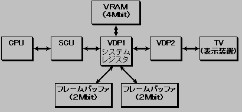

★HARDWARE Manual
★VDP1ユーザーズマニュアル
★HARDWARE Manual
★VDP1ユーザーズマニュアル
■ ｜
進む▼
VDP1ユーザーズマニュアル
第１章 VDP1の機能
■1.1 ＶＤＰ１とは
- VDP1は、セガサターン用のスプライト描画ICです。VDP1はフレームバッファを使用しており、従来のシステムに比べて描画が格段に高速になり、RAM容量も大幅にアップし、より多くのスプライト(キャラクタ)を表示することができます。
●システムの構成
- VDP1には、VRAM(4Mbit DRAM)、2面のフレームバッファ(1面当たり2Mbit
DRAM)が接続されます。画像データは、CPUからVRAMに定義され、フレームバッ
ファを経由して、ディスプレイ装置に出力されます。
描画データはCPUからシスコン(システムコントロールIC)を介してVDP1
に送られ、VRAMに書き込まれます。VRAMに書き込まれたパーツは、16または
8bit/pixelの形式でフレームバッファに描画されます。描画されたフレームバ
ッファのデータはVDP2内のプライオリティ回路を介してディスプレイ装置に表示
されます。
プライオリティ回路は、スクロール面とプライオリティ面との優先順位を決めます。
フレームバッファは2面あり、描画と表示がフレームごとに切り替わります。
描画を制御する情報は、CPUからシスコンを介してVDP1のシステムレジスタに設定
されます。システムレジスタが描画を制御します。
図1.1 システムの構成

●VDP1の機能
- VDP1の機能には、パーツ(キャラクタやライン)の描画、カラーの指定、グーローシェーディングの色演算、
クリッピング座標と相対座標の指定、フレームバッファの表示の制御があります。
パーツ、カラー、および座標についてはVRAM上のコマンドテーブルで制御し、
フレームバッファの表示の制御はシステムレジスタで制御します。
- ◆パーツ
- 定形スプライト
- 矩形スプライト(ズームあり)
- 変形スプライト(回転を含む)
- ポリゴン(四角形)
- ポリライン(ライン4本で四角形にしたもの)
- ライン
- スプライトをまとめてテクスチャパーツと呼び、その他のポリゴン、ポリライン、ラインをノンテクスチャパーツと呼びます。
- ◆カラー
- テクスチャパーツ単位の色数は16、64、128、256、32768色が可能
- ◆特殊機能
- RGBコードのとき、半輝度、半透明、グーローシェーディング、シャドウ(影付け)の色演算が可能
- メッシュ(タイリング)
- ◆座標制御
- システムとユーザーの2個のクリッピング設定可能
- 描画時の相対座標指定可能
- ◆フレームバッファ表示制御
- フレームバッファ画面全体の拡大縮小、回転
- TVの表示モードの指定
- フレームバッファ切り替えモード、切り替えトリガと描画トリガの指定
- 倍密インタレースの指定
- イレースライト時のフィル領域の指定とフィルデータの指定
- プログラム開発時のヘルプ情報としてのフレームバッファへの転送終了状態
■ ｜
進む▼
★HARDWARE Manual
★VDP1ユーザーズマニュアル
Copyright SEGA ENTERPRISES, LTD., 1997